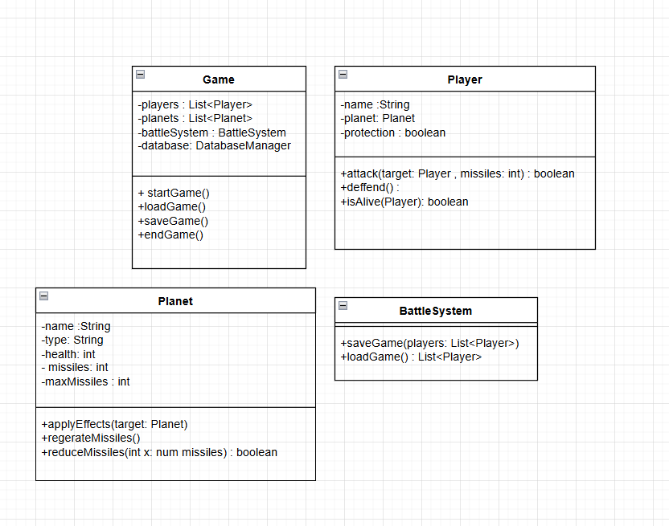
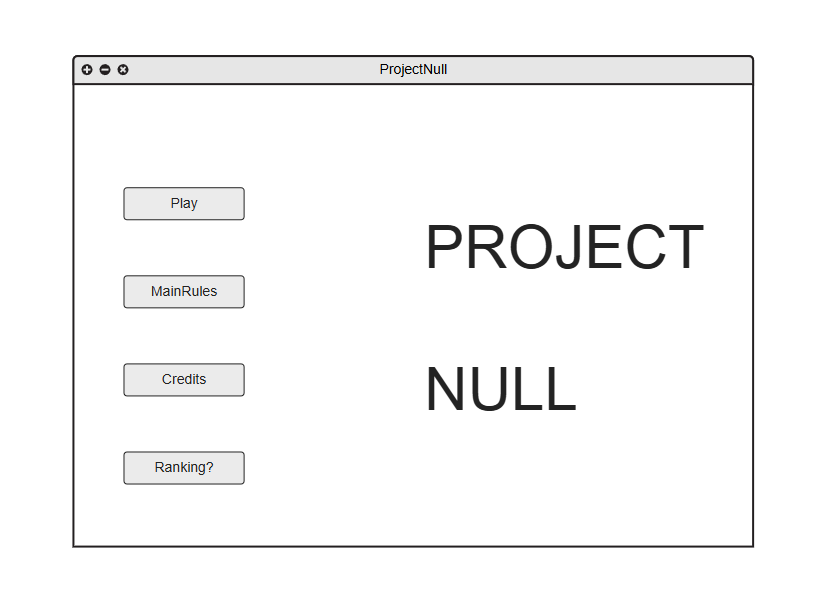
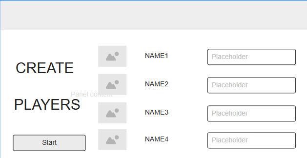
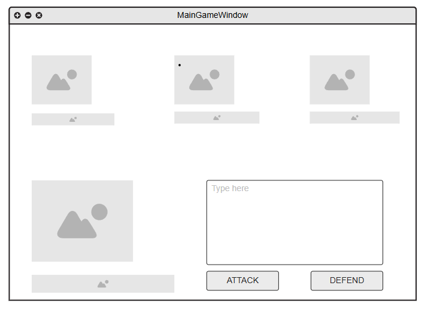

Principal y único desarrollador del proyecto, responsable de todas las funcionalidades del programa, incluyendo la presentación, la gestión de la base de datos, la calidad del código, entre otros aspectos.
Project Null es un juego de estrategia por turnos en el que los jugadores controlan planetas en un universo , donde fuerzas desconocidas influyen en la guerra interplanetaria. Cada jugador elige un planeta con características únicas y debe sobrevivir enfrentándose a los demás.
Project Null no solo contará con una sólida funcionalidad de código, sino que también incorporará mecánicas para los planetas. Estas mecánicas ofrecerán a los jugadores la opción de ejercer efectos especiales que influirán en los demás participantes
DIAGRAMA DE CLASES: (En revision)
DIAGRAMA DE CLASES Swing: (En creación)
Mockups y, en el futuro, capturas del juego.
Menu inical del juego
Menu de creacion de jugadores
Ventana de juego
